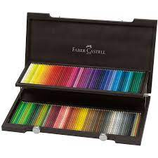

Faber-Castell es una fábrica de útiles escolares y una de las empresas alemanas más antiguas, al haber sido fundada en 1761. Se inició como un taller de carpintería fundado por Kaspar Faber, en Stein, cerca de Núremberg. Posteriormente, uno de sus descendientes, Lothar Faber, convirtió al lápiz en el primer útil de escritura con marca del mundo. El matrimonio de su nieta y heredera universal, la baronesa Ottilie von Faber, con el conde Alexander zu Castell-Rüdenhausen, dio lugar al nacimiento de la marca Faber-Castell. Hoy en día, continúa siendo propiedad de la misma familia, la octava generación desde su fundador. La compañía es muy reconocida en Alemania, donde es común aprender a escribir con lápices y plumas de esta marca. Internacionalmente, cuenta con una sólida reputación por sus materiales de dibujo y escritura de alta calidad.
GoldFaber
El nuevo concepto de estudio creativo de Faber-Castell ofrece una amplia gama de productos de alta calidad para todos los artistas principiantes y aficionados a un precio asequible. La pieza central del nuevo surtido son los lápices de color Goldfaber de color intensivo y los lápices de acuarela Goldfaber Aqua completamente solubles en agua.
Grafito
Reducción de la reflexión: esta característica especial también está representada por un desarrollo de Faber-Castell que da una herramienta básica que siempre ha sido altamente brillante fantásticas nuevas propiedades: el Pitt Graphite Matt es el primer lápiz de grafito con un plomo negro mate y profundo. El lápiz satisface así no tanto lo de moda como las necesidades muy prácticas de artistas y diseñadores gráficos de todo el mundo que quieren o necesitan comunicar su trabajo de manera digital: cuando fotografías o escaneas un dibujo hecho con lápices convencionales, el grafito brillante crea automáticamente reflejos, con el resultado de que la representación es parcialmente irreconocible y tienes que mirarla más tiempo y desde diferentes ángulos para obtener una impresión completa.

Pitt Artist Pen
El amor por las técnicas analógicas continúa. Muchas personas en todo el mundo pintan, escriben y dibujan por pura alegría y pasión. En la era de los teléfonos inteligentes y las pantallas táctiles, estas personas anhelan hacer cosas en las que puedan vivir su creatividad y concentrarse plenamente en sí mismos. En particular, las letras a mano son una de las tendencias artesanales actuales y la charla tanto de artistas profesionales como de aficionados. Esto no es una sorpresa porque las letras ingeniosas a mano crean verdaderas piezas de arte escrito a mano.
Polychromos
Los Ecolápices Polychromos son internacionalmente valorados por artistas profesionales y aficionados por su extraordinaria calidad. Pigmentos de alta calidad con resistencia a la acción de la luz y luminosidad de color insuperables. Trazo suave de colorido intenso. Resistente al agua y permanente. Mina de 3,8 mm de grosor. Gran resistencia a la rotura gracias a un encolado elástico entre mina y madera.
Desea regresar a la pagina principal
index